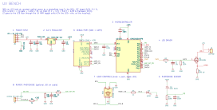
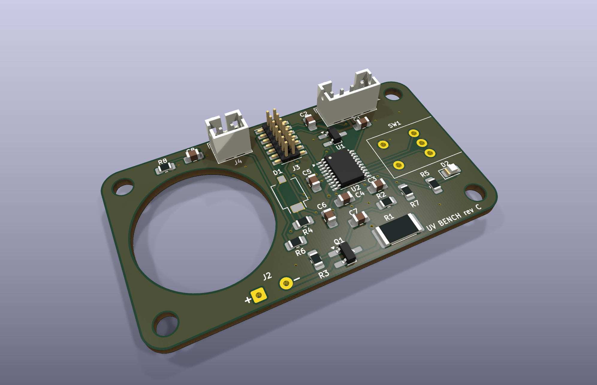
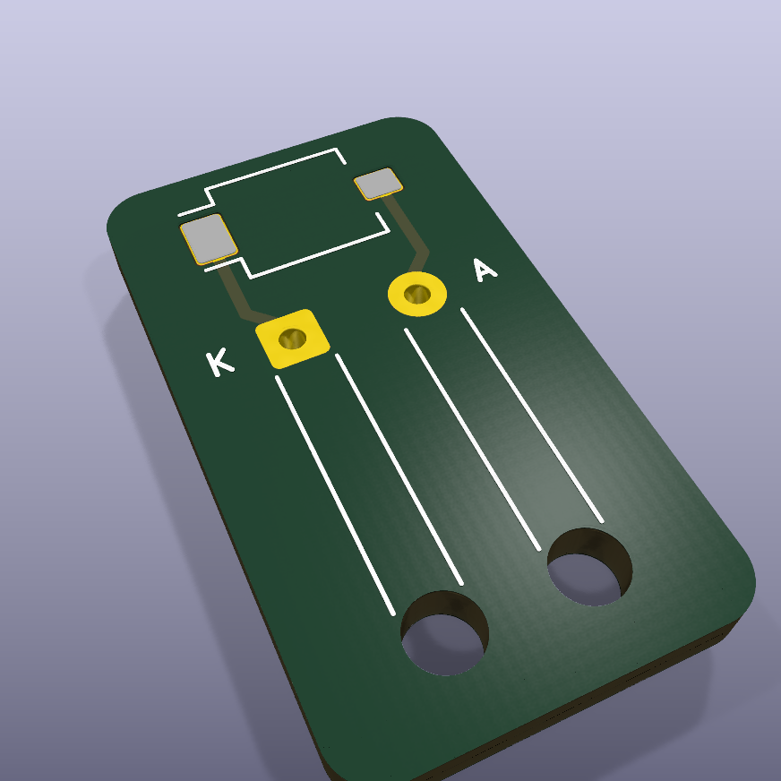

A small bench light source for UV-fluorescence experiments. A ~1 W, 365 nm LED must deliver a stable, settable light power, not just a stable current: LED output drifts with temperature and age. A photodiode watches the LED and the microcontroller adjusts the drive until the reading matches the setpoint. An external board sets the power over I2C; a knob allows manual use. The board must be cheap, small and solderable by hand.
5 V ──► LED+ ──[ARM switch]──► UV LED ──► Q1 (MOSFET) ──► R1 3.9 Ω ──► GND
▲ gate └──► I_MON (current, monitoring)
MCU PWM 20 kHz ──► RC filter (1 kΩ / 10 µF) ──┘
MCU ADC ◄── photodiode D1 + 100 kΩ load ◄~~~ a fraction of the LED light (the feedback loop)
uv-bench-revC-ordered); parts ordered at DigiKey (~€53); Convoy S2 ordered; I2C interface spec v2.3.
| Ref | Part | Role, and why this one |
|---|---|---|
| U2 | STM32C031F6P6 (TSSOP-20) | Runs the loop: PWM (TIM1), 3 ADC inputs (PD, I_MON, remote PD), I2C target, encoder timer, UART. Cheap Cortex-M0+, all functions on default pins |
| Q1, R1 | AO3400A + 3.9 Ω 1 W (2512) | Current sink. Logic-level MOSFET, fully on at 2.5 V gate; R1 sets the limit and gives a free current measurement |
| R2, C7, R3 | 1 kΩ, 10 µF, 100 kΩ | PWM → DC filter (τ = 10 ms); R3 pulls the gate low during reset, so the LED stays off |
| D1, R4, C6 | SFH 2401, 100 kΩ, 100 nF | On-board photodiode watching the LED; V = Ipd × 100 kΩ, filtered at 10 ms |
| U1 | MCP1702 3.3 V LDO (SOT-23) | 3.3 V for the MCU, also the ADC reference. ~5 mA load, so a linear regulator wastes only ~9 mW |
| SW1, D2 | Bourns PEC09 encoder + push, green LED | Manual mode. An encoder, not a potentiometer, so switching mode never makes the power jump |
| J1 / J4 | JST-PH 4-pin / 2-pin | Host cable (GND, 5 V, SDA, SCL), keyed / remote photodiode, protected by R6, R7, C8 |
| J3 | STDC14 (Samtec FTSH-107, keyed) | Plugs straight into the ST-LINK V3MINIE: SWD programming plus a UART console over the same USB cable |
| J2 | 2 solder pads | Wires to the LED star, through the ARM switch |

